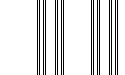
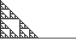
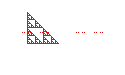
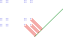
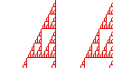

| For shapes constructed from other shapes, typically the dimensions of the pieces are related to the dimensions of the whole. The constructions we consider are the union, intersection, product, and projection. Typical dimension rules are these. | |
| How is the dimension of the product of A and B related to the dimensions A and B? Typically, the dimension of the product is the sum of the dimensions. |  |
| How is the dimension of the union of A and B related to the dimensions A and B? Typically, the dimension of the union is the maximum of the dimensions. |  |
| How is the dimension of the intersection of A and B related to the dimensions A and B? Typically, the codimension of the intersection is the sum of the codimensions. |  |
| How is the dimension of A related to the dimension of the projection of A to B? Think of the projection as the shadow A casts on B. For typical directions of projection, the dimension of A equals the dimension of the projection of A plus the dimension of the typical subset of A that projects to a single point. |  |
| Here are some Exercises. |  |